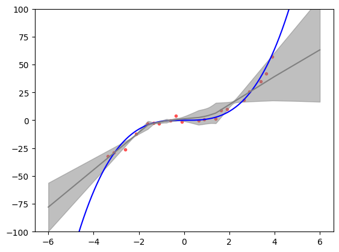
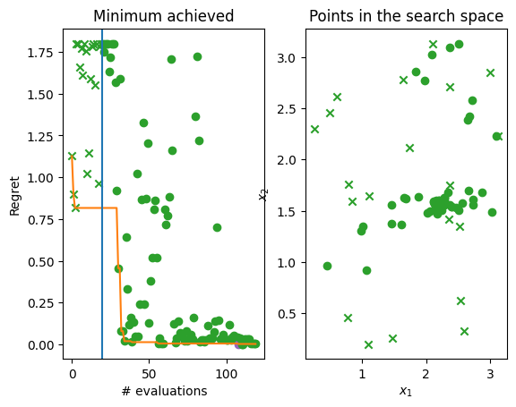

Deep ensembles#
Gaussian processes as a surrogate models are hard to beat on smaller datasets and optimization budgets. However, they scale poorly with amount of data, cannot easily capture non-stationarities and they are rather slow at prediction time. Here we show how uncertainty-aware neural networks can be effective alternative to Gaussian processes in Bayesian optimisation, in particular for large budgets, non-stationary objective functions or when predictions need to be made quickly.
Check out our tutorial on Deep Gaussian Processes for Bayesian optimization as another alternative model type supported by Trieste that can model non-stationary functions (but also deal well with small datasets).
Let’s start by importing some essential packages and modules.
[1]:
import os
os.environ["TF_CPP_MIN_LOG_LEVEL"] = "3"
import numpy as np
import tensorflow as tf
import trieste
# silence TF warnings and info messages, only print errors
# https://stackoverflow.com/questions/35911252/disable-tensorflow-debugging-information
tf.get_logger().setLevel("ERROR")
np.random.seed(1794)
tf.random.set_seed(1794)
2026-06-17 13:45:59,657 INFO util.py:154 -- Missing packages: ['ipywidgets']. Run `pip install -U ipywidgets`, then restart the notebook server for rich notebook output.
What are deep ensembles?#
Deep neural networks typically output only mean predictions, not posterior distributions as probabilistic models such as Gaussian processes do. Posterior distributions encode mean predictions, but also epistemic uncertainty - type of uncertainty that stems from model misspecification, and which can be eliminated with further data. Aleatoric uncertainty that stems from stochasticity of the data generating process is not contained in the posterior, but can be learned from the data. Bayesian optimization requires probabilistic models because epistemic uncertainty plays a key role in balancing between exploration and exploitation.
Recently, however, there has been some development of uncertainty-aware deep neural networks. Ensembles of deep neural networks, introduced recently by [LPB16], is a type of such networks. Main ingredients are probabilistic feed-forward networks as members of the ensemble, where the final layers is a Gaussian distribution, training with maximum likelihood instead of typical root mean square error, and different random initialization of weights for generating diversity among the networks.
Monte carlo dropout ([GG16]), Bayes-by-backprop ([BCKW15]) or evidential deep regression ([ASSR19]) are some of the other types of uncertainty-aware deep neural networks. Systematic comparisons however show that deep ensembles represent the uncertainty the best and are probably the simplest of the major alternatives (see, for example, [OWA+21]). Good estimates of uncertainty makes deep ensembles a potentially attractive model for Bayesian optimization.
How good is uncertainty representation of deep ensembles?#
We will use a simple one-dimensional toy problem introduced by [HernandezLA15], which was used in [LPB16] to provide some illustrative evidence that deep ensembles do a good job of estimating uncertainty. We will replicate this exercise here.
The toy problem is a simple cubic function with some Normally distributed noise around it. We will randomly sample 20 input points from [-4,4] interval that we will use as a training data later on.
[2]:
from trieste.space import Box
from trieste.data import Dataset
def objective(x, error=True):
y = tf.pow(x, 3)
if error:
y += tf.random.normal(x.shape, 0, 3, dtype=x.dtype)
return y
num_points = 20
# we define the [-4,4] interval using a `Box` search space that has convenient sampling methods
search_space = Box([-4], [4])
inputs = search_space.sample_sobol(num_points)
outputs = objective(inputs)
data = Dataset(inputs, outputs)
Next we define a deep ensemble model and train it. Trieste supports neural network models defined as TensorFlow’s Keras models. Since creating ensemble models in Keras can be somewhat involved, Trieste provides some basic architectures. Here we use the build_keras_ensemble function which builds a simple ensemble of neural networks in Keras where each network has the same architecture: number of hidden layers, nodes in hidden layers and activation function. It uses sensible defaults for many
parameters and finally returns a model of KerasEnsemble class.
As with other supported types of models (e.g. Gaussian process models from GPflow), we cannot use KerasEnsemble directly in Bayesian optimization routines, we need to pass it through an appropriate wrapper, DeepEnsemble wrapper in this case. One difference with respect to other model types is that we need to use a Keras specific optimizer wrapper KerasOptimizer where we need to specify a stochastic optimizer (Adam is used by default, but we can use other stochastic optimizers from
TensorFlow), objective function (here negative log likelihood) and we can provide custom arguments for the Keras fit method (here we modify the default arguments; check Keras API documentation for a list of possible arguments).
For the cubic function toy problem we use the same architecture as in [LPB16]: ensemble size of 5 networks, where each network has one hidden layer with 100 nodes. All other implementation details were missing and we used sensible choices, as well as details about training the network.
[3]:
from gpflow.keras import tf_keras
from trieste.models.keras import (
DeepEnsemble,
KerasPredictor,
build_keras_ensemble,
)
from trieste.models.optimizer import KerasOptimizer
def build_cubic_model(data: Dataset) -> DeepEnsemble:
ensemble_size = 5
num_hidden_layers = 1
num_nodes = 100
keras_ensemble = build_keras_ensemble(
data, ensemble_size, num_hidden_layers, num_nodes
)
fit_args = {
"batch_size": 10,
"epochs": 1000,
"verbose": 0,
}
optimizer = KerasOptimizer(tf_keras.optimizers.Adam(0.01), fit_args)
return DeepEnsemble(keras_ensemble, optimizer)
# building and optimizing the model
model = build_cubic_model(data)
model.optimize(data)
[3]:
<tf_keras.src.callbacks.History at 0x7f31ac1e9150>
Let’s illustrate the results of the model training. We create a test set that includes points outside the interval on which the model has been trained. These extrapolation points are a good test of model’s representation of uncertainty. What would we expect to see? Bayesian inference provides a reference frame. Predictive uncertainty should increase the farther we are from the training data and the predictive mean should start returning to the prior mean (assuming standard zero mean function).
We can see in the figure below that predictive distribution of deep ensembles indeed exhibits these features. The figure also replicates fairly well Figure 1 (rightmost panel) from [LPB16] and provides a reasonable match to Bayesian neural network trained on same toy problem with Hamiltonian Monte Carlo (golden standard that is usually very expensive) as illustrated in Figure 1 (upper right panel) [HernandezLA15]. This gives us some assurance that deep ensembles might provide uncertainty that is good enough for trading off between exploration and exploitation in Bayesian optimization.
[4]:
import matplotlib.pyplot as plt
# test data that includes extrapolation points
test_points = tf.linspace(-6, 6, 1000)
# generating a plot with ground truth function, mean prediction and 3 standard
# deviations around it
plt.scatter(inputs, outputs, marker=".", alpha=0.6, color="red", label="data")
plt.plot(
test_points, objective(test_points, False), color="blue", label="function"
)
y_hat, y_var = model.predict(test_points)
y_hat_minus_3sd = y_hat - 3 * tf.math.sqrt(y_var)
y_hat_plus_3sd = y_hat + 3 * tf.math.sqrt(y_var)
plt.plot(test_points, y_hat, color="gray", label="model $\mu$")
plt.fill_between(
test_points,
tf.squeeze(y_hat_minus_3sd),
tf.squeeze(y_hat_plus_3sd),
color="gray",
alpha=0.5,
label="$\mu -/+ 3SD$",
)
plt.ylim([-100, 100])
plt.show()

Non-stationary toy problem#
Now we turn to a somewhat more serious synthetic optimization problem. We want to find the minimum of the two-dimensional version of the Michalewicz function. Even though we stated that deep ensembles should be used with larger budget sizes, here we will show them on a small dataset to provide a problem that is feasible for the scope of the tutorial.
The Michalewicz function is defined on the search space of \([0, \pi]^2\). Below we plot the function over this space. The Michalewicz function is interesting case for deep ensembles as it features sharp ridges that are difficult to capture with Gaussian processes. This occurs because lengthscale parameters in typical kernels cannot easily capture both ridges (requiring smaller lengthscales) and fairly flat areas everywhere else (requiring larger lengthscales).
[5]:
from trieste.objectives import Michalewicz2
from trieste.experimental.plotting import plot_function_plotly
search_space = Michalewicz2.search_space
function = Michalewicz2.objective
MINIMUM = Michalewicz2.minimum
MINIMIZER = Michalewicz2.minimum
# we illustrate the 2-dimensional Michalewicz function
fig = plot_function_plotly(
function, search_space.lower, search_space.upper, grid_density=20
)
fig.show()
Data type cannot be displayed: application/vnd.plotly.v1+json
Initial design#
We set up the observer as usual, using Sobol sampling to sample the initial points.
[6]:
from trieste.objectives.utils import mk_observer
num_initial_points = 20
initial_query_points = search_space.sample(num_initial_points)
observer = trieste.objectives.utils.mk_observer(function)
initial_data = observer(initial_query_points)
Modelling the objective function#
The Bayesian optimization procedure estimates the next best points to query by using a probabilistic model of the objective. Here we use a deep ensemble instead of a typical probabilistic model. Same as above we use the build_keras_ensemble function to build a simple ensemble of neural networks in Keras and wrap it with a DeepEnsemble wrapper so it can be used in Trieste’s Bayesian optimization loop.
Some notes on choosing the model architecture are necessary. Unfortunately, choosing an architecture that works well for small datasets, a common setting in Bayesian optimization, is not easy. Here we do demonstrate it can work with smaller datasets, but choosing the architecture and model optimization parameters was a lengthy process that does not necessarily generalize to other problems. Hence, we advise to use deep ensembles with larger datasets and ideally large batches so that the model is not retrained after adding a single point.
We can offer some practical advices, however. Architecture parameters like the ensemble size, the number of hidden layers, the number of nodes in the layers and so on affect the capacity of the model. If the model is too large for the amount of data, it will be difficult to train the model and result will be a poor model that cannot be used for optimizing the objective function. Hence, with small datasets like the one used here, we advise to always err on the smaller size, one or two hidden layers, and up to 25 nodes per layer. If we suspect the objective function is more complex these numbers should be increased slightly. With regards to model optimization we advise using a lot of epochs, typically at least 1000, and potentially higher learning rates. Ideally, every once in a while capacity should be increased to be able to use larger amount of data more effectively. Unfortunately, there is almost no research literature that would guide us in how to do this properly.
Interesting alternative to a manual architecture search is to use a separate Bayesian optimization process to optimize the architecture and model optimizer parameters (see recent work by [KLHG21]). This optimization is much faster as it optimizes model performance. It would slow down the original optimization, so its worthwhile only if optimizing the objective function is much more costly.
Below we change the build_model function to adapt the model slightly for the Michalewicz function. Since it’s a more complex function we increase the number of hidden layers but keep the number of nodes per layer on the lower side. Note the large number of epochs
[7]:
def build_model(data: Dataset) -> DeepEnsemble:
ensemble_size = 5
num_hidden_layers = 3
num_nodes = 25
keras_ensemble = build_keras_ensemble(
data, ensemble_size, num_hidden_layers, num_nodes
)
fit_args = {
"batch_size": 10,
"epochs": 1000,
"callbacks": [
tf_keras.callbacks.EarlyStopping(monitor="loss", patience=100)
],
"verbose": 0,
}
optimizer = KerasOptimizer(tf_keras.optimizers.Adam(0.001), fit_args)
return DeepEnsemble(keras_ensemble, optimizer)
# building and optimizing the model
model = build_model(initial_data)
Run the optimization loop#
In Bayesian optimization we use an acquisition function to choose where in the search space to evaluate the objective function in each optimization step. Deep ensemble model uses probabilistic neural networks whose output is at the end approximated with a single Gaussian distribution, which acts as a predictive posterior distribution. This means that any acquisition function can be used that requires only predictive mean and variance. For example, predictive mean and variance is sufficient for
standard acquisition functions such as Expected improvement (see ExpectedImprovement), Lower confidence bound (see NegativeLowerConfidenceBound) or Thompson sampling (see ExactThompsonSampling). Some acquisition functions have additional requirements and these cannot be used (e.g. covariance between sets of query points, as in an entropy-based acquisition function GIBBON).
Here we will illustrate Deep ensembles with a Thompson sampling acquisition function. We use a discrete Thompson sampling strategy that samples a fixed number of points (grid_size) from the search space and takes a certain number of samples at each point based on the model posterior (num_samples, if more than 1 then this is a batch strategy).
[8]:
from trieste.acquisition.rule import DiscreteThompsonSampling
grid_size = 2000
num_samples = 4
# note that `DiscreteThompsonSampling` by default uses `ExactThompsonSampler`
acquisition_rule = DiscreteThompsonSampling(grid_size, num_samples)
We can now run the Bayesian optimization loop by defining a BayesianOptimizer and calling its optimize method.
Note that the optimization might take a while!
[9]:
bo = trieste.bayesian_optimizer.BayesianOptimizer(observer, search_space)
num_steps = 25
# The Keras interface does not currently support using `track_state=True` which saves the model
# in each iteration. This will be addressed in a future update.
result = bo.optimize(
num_steps,
initial_data,
model,
acquisition_rule=acquisition_rule,
track_state=False,
)
dataset = result.try_get_final_dataset()
Optimization completed without errors
Explore the results#
We can now get the best point found by the optimizer. Note this isn’t necessarily the point that was last evaluated.
[10]:
query_points = dataset.query_points.numpy()
observations = dataset.observations.numpy()
arg_min_idx = tf.squeeze(tf.argmin(observations, axis=0))
print(f"Minimizer query point: {query_points[arg_min_idx, :]}")
print(f"Minimum observation: {observations[arg_min_idx, :]}")
print(f"True minimum: {MINIMUM}")
Minimizer query point: [2.21381846 1.57227431]
Minimum observation: [-1.79927236]
True minimum: [-1.8013034]
We can visualise how the optimizer performed as a three-dimensional plot. Crosses mark the initial data points while dots mark the points chosen during the Bayesian optimization run. You can see that there are some samples on the flat regions of the space, while most of the points are exploring the ridges, in particular in the vicinity of the minimum point.
[11]:
from trieste.experimental.plotting import add_bo_points_plotly
fig = plot_function_plotly(
function,
search_space.lower,
search_space.upper,
alpha=0.7,
)
fig = add_bo_points_plotly(
x=query_points[:, 0],
y=query_points[:, 1],
z=observations[:, 0],
num_init=num_initial_points,
idx_best=arg_min_idx,
fig=fig,
)
fig.show()
Data type cannot be displayed: application/vnd.plotly.v1+json
We can visualise the model over the objective function by plotting the mean and 95% confidence intervals of its predictive distribution. Since it is not easy to choose the architecture of the deep ensemble we advise to always check with these types of plots whether the model seems to be doing a good job at modelling the objective function. In this case we can see that the model was able to capture the relevant parts of the objective function.
[12]:
import matplotlib.pyplot as plt
from trieste.experimental.plotting import plot_model_predictions_plotly
fig = plot_model_predictions_plotly(
result.try_get_final_model(),
search_space.lower,
search_space.upper,
)
fig = add_bo_points_plotly(
x=query_points[:, 0],
y=query_points[:, 1],
z=observations[:, 0],
num_init=num_initial_points,
idx_best=arg_min_idx,
fig=fig,
figrow=1,
figcol=1,
)
fig.show()
Data type cannot be displayed: application/vnd.plotly.v1+json
Finally, let’s plot the regret over time, i.e. difference between the minimum of the objective function and lowest observations found by the Bayesian optimization over time. Below you can see two plots. The left hand plot shows the regret over time: the observations (crosses and dots), the current best (orange line), and the start of the optimization loop (blue line). The right hand plot is a two-dimensional search space that shows where in the search space initial points were located (crosses again) and where Bayesian optimization allocated samples (dots). The best point is shown in each (purple dot) and on the left plot you can see that we come very close to 0 which is the minimum of the objective function.
[13]:
from trieste.experimental.plotting import plot_regret, plot_bo_points
suboptimality = observations - MINIMUM.numpy()
fig, ax = plt.subplots(1, 2)
plot_regret(
suboptimality,
ax[0],
num_init=num_initial_points,
idx_best=arg_min_idx,
)
plot_bo_points(
query_points, ax[1], num_init=num_initial_points, idx_best=arg_min_idx
)
ax[0].set_title("Minimum achieved")
ax[0].set_ylabel("Regret")
ax[0].set_xlabel("# evaluations")
ax[1].set_ylabel("$x_2$")
ax[1].set_xlabel("$x_1$")
ax[1].set_title("Points in the search space")
fig.show()
